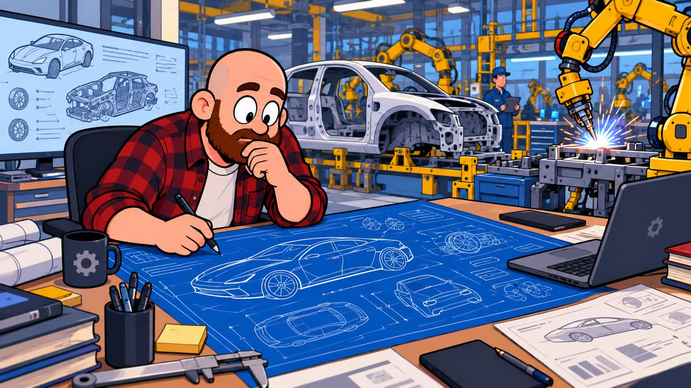
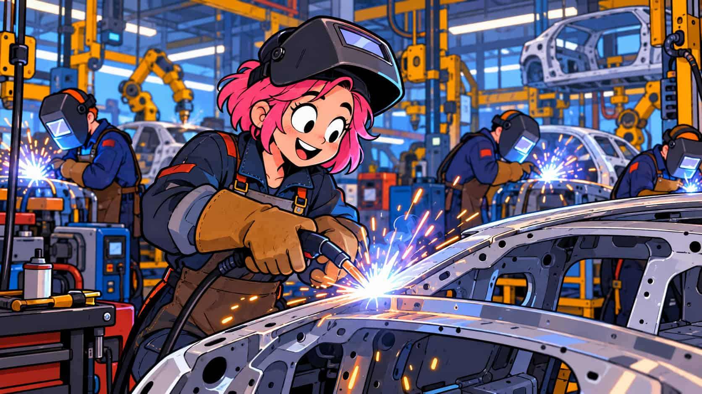
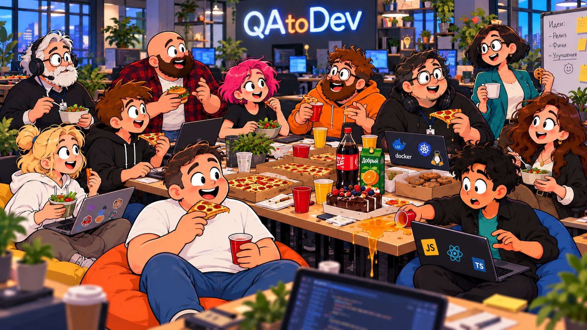

Владелец продукта
Продукт · цели
Эту роль также называют Product Owner. Владелец продукта определяет, какую пользу продукт должен принести пользователям, расставляет приоритеты в бэклоге и решает, какие задачи команда возьмёт в работу.
Вместе с тестировщиком: уточняет ожидаемый результат и критерии приёмки задачи.
Как бывает в команде: кажется, что владелец продукта постоянно на встречах. Он обсуждает с заказчиком цели продукта, а с соседними командами — общую функцию, которую нужно внедрить без конфликтов между сервисами.
Бизнес-аналитик
Бизнес-логика
Выясняет потребности бизнеса и пользователей, описывает бизнес-процессы и правила, по которым должен работать продукт.
Вместе с тестировщиком: разбирает пользовательские сценарии и спорные места в требованиях. Например, после найденной на Smoke лишней скидки на доставку исправит ошибочное бизнес-требование и передаст его разработчику.
Как бывает в команде: его тоже трудно поймать между встречами, но он поможет разобраться в недочёте требований. Иногда уже готовое поведение оказывается полезнее первоначального замысла — тогда команда согласует изменение требований, а не просто объявляет ошибку нормой.
Дизайнер
Дизайн · интерфейс
Продумывает пользовательский путь и создаёт макеты интерфейса: расположение элементов, состояния экранов и поведение при разных действиях.
Вместе с тестировщиком: уточняет ожидаемый вид и поведение интерфейса, в том числе ошибки и пустые состояния. Если макет экрана оплаты остался в старом стиле, обновит его под новую дизайн-систему и передаст разработчику.
Как бывает в команде: дизайнер приносит три макета, команда голосует в чате за понравившийся и обсуждает, какой вариант удобнее пользователю. Тестировщик заодно спрашивает, как будут выглядеть ошибки и пустой экран.

Системный аналитик
Бэкенд · API
Переводит бизнес-требования в детали реализации: описывает данные, интерфейсы, интеграции и поведение системы в разных ситуациях.
Вместе с тестировщиком: уточняет ответы API, ограничения и пограничные случаи для проверок. Например, поможет найти причину ошибки 500 после изменения API.
Как бывает в команде: документация ещё не успела за изменениями, и не все детали описаны. Аналитик помогает выяснить, через какой endpoint идёт запрос, что вернёт сервер и какие данные должны оказаться в базе.

Бэкенд-разработчик
Сервер · код
Пишет серверную логику и API, работает с базой данных, исправляет ошибки и проверяет свою реализацию.
Вместе с тестировщиком: воспроизводит баги, обсуждает причины и проверяет исправления.
Как бывает в команде: исправил один баг, а рядом неожиданно появились три новых. Это повод проверить связанные сценарии и вместе найти причину. Если разработчик занят срочным исправлением, лучше прийти с чёткими шагами воспроизведения и выбрать подходящий момент для обсуждения.

Фронтенд-разработчик
Интерфейс · браузер
Превращает макеты в работающие страницы: пишет код интерфейса, показывает данные от API и настраивает действия пользователя.
Вместе с тестировщиком: проверяет поведение кнопок и форм, ошибки на экране и работу страницы на разных размерах экрана.
Как бывает в команде: на компьютере кнопка выглядит хорошо, а на телефоне перекрывает текст. Тестировщик показывает проблему, дизайнер уточняет макет, а фронтенд-разработчик исправляет отображение.
Тестировщик
Проверки · регресс
Изучает требования, готовит сценарии и данные, проверяет продукт, описывает дефекты и повторно проверяет исправления.
Вместе с командой: заранее замечает неоднозначности и помогает понять, готова ли функция к выпуску.
Как бывает в команде: большую функцию делят на части между тестировщиками. Один из них становится feature lead: держит в голове всю функцию, ходит на синхронизации и собирает общую картину, пока коллеги глубоко проверяют свои части.
Релиз-менеджер
Релиз · выпуск
Координирует выпуск новой версии: согласует состав релиза, время развёртывания, проверки и план отката на случай проблемы.
Вместе с тестировщиком: сверяет результаты проверок перед релизом и после него.
Как бывает в команде: на утреннем дейли — короткой командной планёрке — напоминает, сколько времени осталось до релиза и какие задачи ещё не готовы. Со стороны может казаться, что он всех подгоняет, но ему важно увидеть риск заранее.
Менеджер проекта
План · сроки
Помогает команде планировать работу: следит за сроками, зависимостями задач и договорённостями между участниками проекта.
Вместе с тестировщиком: учитывает время на проверки и помогает заранее сообщить о риске, если задача задерживается.
Как бывает в команде: одна команда ждёт API от другой, а срок уже близко. Менеджер проекта помогает согласовать новый план. Приоритеты продукта определяет владелец продукта, а сам выпуск координирует релиз-менеджер.
DevOps-инженер
Сборка · стенды
Помогает автоматически собирать и развёртывать приложение, настраивает окружения и наблюдение за работой системы. Конкретные задачи зависят от команды.
Вместе с тестировщиком: выясняет, какая версия попала на тестовый стенд, доступны ли нужные сервисы и не связана ли ошибка с окружением.
Как бывает в команде: проверка не проходит, хотя разработчик уже исправил код. DevOps-инженер помогает обнаружить, что на стенде ещё работает старая версия приложения.
Scrum-мастер
Команда · процесс
Помогает команде замечать помехи и улучшать совместную работу. Может сопровождать несколько команд или совмещать эту роль с работой тестировщика либо релиз-менеджера; совмещение с владельцем продукта тоже встречается, но может привести к конфликту интересов.
Как бывает в команде: предлагает на ретроспективе спринта записать на зелёных карточках, что удалось, а на красных — что мешало, и выбрать улучшение на следующий спринт. Иногда предлагает мозговой штурм. Когда релиз уже близко и все заняты, встречу лучше провести коротко и по делу — релиз-менеджер наверняка напомнит о сроках.